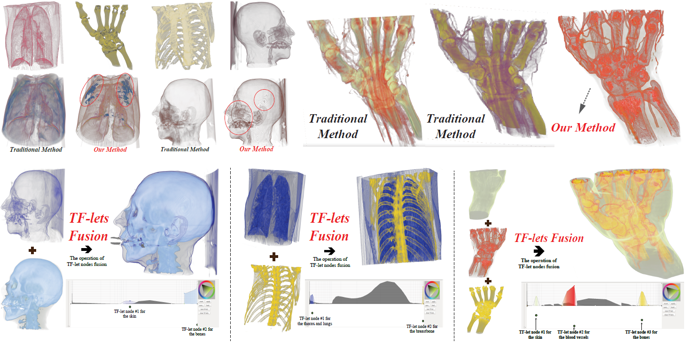
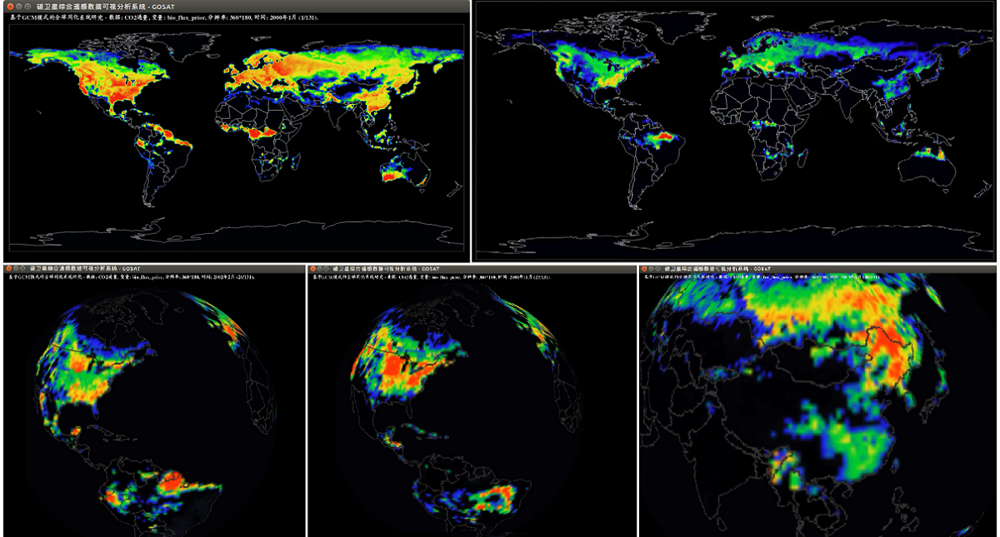
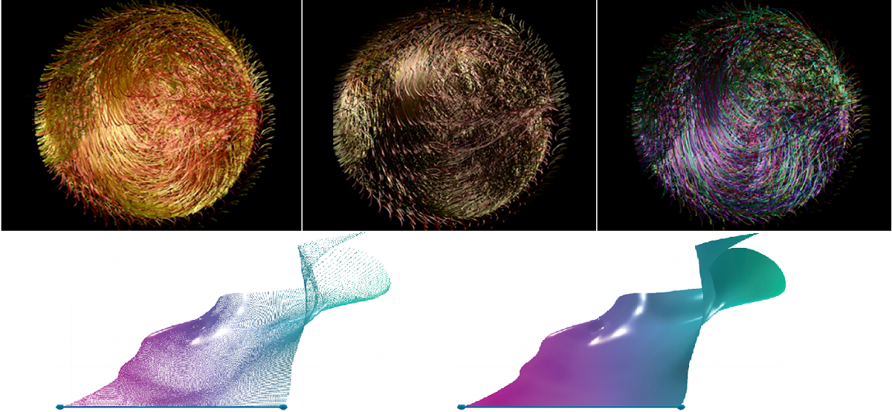
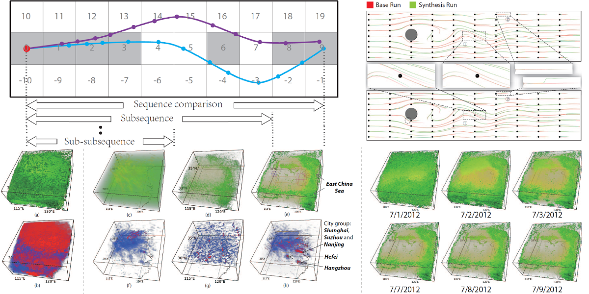

Richen Liu 刘日晨

-
Associate Professor, School of Computer and Electronic Information/School of Artificial Intelligence, Nanjing Normal University
Research Interests
Immersive Compting and Analytics, XR (VR/AR/MR)-based Visualization, HCI
3D Reconstruction from A Single Image, Calibration, etc.
Email: richen.liu[at]njnu[dot]edu[dot]cn | richen[at]pku[dot]edu[dot]cn 欢迎优秀本科生、研究生邮件咨询加入研究组。
学生培养概况： 2020年第一届本科毕业生共3位，分别获得日本CS top 3大学、美国top 50大学、国内CS top 3的985大学offer.
研究组成立至今的三年内：以学生一作(4篇)/除导师外学生一作(4篇)等发表CCF会议或SCI论文8篇，包括：CCF A类会议2篇 (其中一篇为双栏7页poster) + CCF B类3篇 (其中1篇SCI-TOP) + 中科院一区且SCI-TOP 1篇 + JCR Q1 1篇 + SCI核心1篇 + SCI 1篇；指导学生获得CCF C类会议PVIS的Best Poster奖!
近两年教学成果/指导学生：6位本科生连续两届获得 “英才计划”A类项目：自19年第一次申请到现在资助率达100%，全校所有学院激烈PK并第一次获第3名/共10项，项目经费+不占学院指标的保研名额；获江苏省研究生实践创新计划项目2项；江苏省优秀毕业设计(论文)一等奖；中国大学生计算机设计大赛国赛一等奖2项 (破校纪录)、二等奖2项、三等奖1项；国家级大学生创新创业项目1项 (结项优秀).
Education
-
Ph.D.: 2012.09 - 2017.01, PKU Visualization and Visual Analytics Group, School of EECS, supervised by Prof. Xiaoru Yuan, Peking University (Graduated with Honors)
-
M.Sc.: School of Computer Science (National Key Lab of Fundamental Science on Synthetic Vision), Sichuan University (Graduated with Honors)
-
B.Eng.: School of Software Engineering, Sichuan University (Graduated with Honors)
Fundings & Projects
-
Key Laboratory of Data Intensive Computing/Intelligent Computing and Information Processing (Open Foundation: BD202005), 2021.06-2022.09, Project Leader.
-
Yingcai Foundation (Level A), student applicants: Yu Zhu, Chuyu Zhang and Xiaohan Wang, 2020.12-2022.12.
-
National Natural Science Foundation of China (NSFC: 61702271), 2018.01-2020.12, Project Leader.
-
Yingcai Foundation (Level A), student applicants: Shunlong Ye and Guang Yang, 2019.12-2021.12.
-
National Natural Science Foundation of China (NSFC: 41971343), 2020.01-2023.12, Participant.
-
National Natural Science Foundation of China (NSFC: 61672055), 2017.01-2020.12, Participant.
Publications ("†": our group students)
- Richen Liu, Min Gao†, Shunlong Ye†, and Jiang Zhang.
IGScript: An Interaction Grammar for Scientific Data Presentation. ACM SIGCHI Conference on Human Factors in Computing Systems (ACM CHI’21), Article No.: 26, pages 1-13, Yokohama, Japan, May 8-13, 2021. (CCF A, Full Paper, Oral)
| DOI | PDF (21.8 MB) | oral slides (2.2 MB) | 30-sec preview (mp4, 19.1 MB) | Demo (mp4, 53.7 MB) | - Xiaohan Wang†, Chuyu Zhang†, Yu Zhu†, Xueyi Chen, Liming Shen, Richen Liu*, and Rongtao Qian.
Hybrid Line-Based and Region-Based Interactive Set Data Visualization. ACM SIGCHI Conference on Human Factors in Computing Systems Extended Abstracts (ACM CHI’21 EA), Article No.: 411, pages 1-7, Yokohama, Japan, May 8-13, 2021. (CCF A Conf. Poster Track, LBW)
| DOI | PDF (4.5 MB) | slides (1.5 MB) | Demo (mp4, 13.2 MB) | - Richen Liu, Hailong Wang†, Chuyu Zhang†, Xiaojian Chen†, Lijun Wang†, Genlin Ji, Bin Zhao, Zhiwei Mao†, and Dan Yang†.
Narrative Scientific Data Visualization in an Immersive Environment. Bioinformatics, 37(14):2033-2041, 2021. (CCF B, 生物信息学权威期刊, 中科院SCI-TOP, IF=6.937, "†": undergraduates, published: 04-Feb-21)
| DOI | PDF | - Richen Liu, Xiaodong Wen†, Meng Jiang†, Guang Yang†, Chuyu Zhang†, and Xiaojian Chen†.
Multiuser Collaborative Illustration and Visualization for Volumetric Scientific Data. Software: Practice and Experience, 51(5):1080-1096, 2021. (CCF B, published: 22-Nov-20)
| DOI | PDF | - Liming Shen†, Xueyi Chen†, Richen Liu*, Hailong Wang†, and Genlin Ji.
Domain-Specific Language Techniques for Visual Computing: A Comprehensive Study. Archives of Computational Methods in Engineering, 28(4):3113-3134, 2021. (中科院一区、SCI-TOP, IF=7.302, published: 27-Oct-20)
| DOI | PDF | - Jinping Jia, Ying Hu, Bin Zhao, Genlin Ji, and Richen Liu.
Discovering Collective Converging Groups of Large Scale Moving Objects in Road Networks. The 26th International Conference on Database Systems for Advanced Applications (DASFAA’21), pages 307-324, Taipei, China, Apr. 11-14, 2021. (CCF B)
- Richen Liu, Genlin Ji, and Mingjun Su.
Domain-Specific Visualization System Based on Automatic Multiseed Recommendations: Extracting Stratigraphic Structures. Software: Practice and Experience, 20(2):98-115, 2020. (CCF B)
| DOI | PDF | - S. Fang†, L. Xiao†, Y. Ge†, M. Gao†, R. Lau*, G. Ji, and L. Wang.
Interactive Diffusion Tensor Imaging Fiber Data Visualization via Leap Motion. , 2020. (JCR Q1 SCI, "†": undergraduates)
| DOI | PDF | - Richen Liu, Liming Shen†, Xueyi Chen†, Genlin Ji, Bin Zhao, Chao Tan, and Mingjun Su.
Sketch-Based Slice Interpretative Visualization for Stratigraphic Data. JIST, 63(6):60505-1-60505-10(10), Nov., 2019. (SCI核心, "†": undergraduates)
| DOI | PDF | - Min Gao†, Lijun Wang†, Jingle Jia, Yimin Chen, Richen Liu*, Liming Shen, Xueyi Chen, and Mingjun Su.
Interactive Geological Visualization Based on Quadratic-Surface Distance Query. JEI, 28(2):021009 (1-11), 2019. (SCI, "†": undergraduates)
| DOI | PDF | - Min Gao†, Yuzhe Xiang†, Lijun Wang†, Richen Liu*, Sitong Fang, Siming Chen, Jingle Jia, Genlin Ji, and Bin Zhao.
Histogram-Based Nonlinear Transfer Function Edit and Fusion. Lecture Notes in Computer Science (The 10th Int. Conf. on Image and Graphics, ICIG'19), 11902:300-315, Nov, 2019. (EI, "†": undergraduates)
| DOI | PDF | - Richen Liu, Siming Chen, Genlin Ji, Bin Zhao, Qiusheng Li, and Mingjun Su.
Interactive Stratigraphic Structure Visualization for Seismic Data. Journal of Visual Languages and Computing, 48:81-90, 2018. (SCI)
| DOI | PDF | - Jingjing Han, Mingyu Liu, Genlin Ji, Bin Zhao, Richen Liu, and Ying Li
Efficient Semantic Enrichment Process for Spatiotemporal Trajectories in Geospatial Environment. LNCS (APWeb-WAIM 2020), vol 12318:342-350, 2020.
| DOI | PDF | - Chao Tan, Genlin Ji, Richen Liu, and Yanqiu Cao.
LTSA-LE: A Local Tangent Space Alignment Label Enhancement Algorithm. Tsinghua Science and Technology, 26(2):135-145, 2019. (SCI)
| DOI | PDF | - Richen Liu, Hanqi Guo, and Xiaoru Yuan.
User-Defined Feature Comparison for Vector Field Ensembles. Journal of Visualization, 20(2):217–229, 2017. (SCI)
| DOI | PDF | - Richen Liu, Hanqi Guo, Jiang Zhang, and Xiaoru Yuan.
Comparative Visualization of Vector Field Ensembles Based on Longest Common Subsequence. IEEE Pacific Visualization (IEEE PacificVis'16), pages 96-103, Taipei, China, Apr. 19-22, 2016. (CCF C, oral presentation)
| DOI | PDF | - Richen Liu, Zhihong Wu, and Dequan Guo.
Metric Reconstruction of Straight Homogeneous Generalized Cylinders with Elliptical Cross-Section from a Single Image. JEI, 24(6):061107 , Nov. 2015. (SCI)
| DOI | PDF | - Richen Liu, Hanqi Guo, and Xiaoru Yuan.
A Bottom-Up Scheme for User-Defined Feature Comparison in Ensemble Data. ACM SIGGRAPH Asia 2015 Symposium on Visualization in High Performance Computing, Kobe, Japan, Nov. 2-5, 2015. (oral presentation)
| DOI | PDF | - Richen Liu, Hanqi Guo, and Xiaoru Yuan.
Seismic Structure Extraction Based on Multi-scale Sensitivity Analysis. Journal of Visualization, 17(3):157-166, 2014. (SCI)
| DOI | PDF | - Hanqi Guo, Jiang Zhang, Richen Liu, Lu Liu, Xiaoru Yuan, Jian Huang, Xiangfei Meng, and Jingshan Pan.
Advection-based Sparse Data Management for Visualizing Unsteady Flow. IEEE Transactions on Visualization and Computer Graphics (IEEE SciVis), 20(12):2555-2564, 2014. (CCF A)
| DOI | PDF |
- Dan Yang†, Zhiwei Mao†, Xiaojian Chen†, Siru Chen†, Xiaodong Wen†, Meng Jiang†, and Yiping Wu.
Visualization Transfer from 2D Image to 3D Volume. IEEE PacificVis 2021 (IEEE PacificVis), Tianjin, China, April 19-21, 2021. (CCF C Poster, "†": our group students, Best Poster Award).
| DOI | PDF | - Min Gao†, Hailong Wang†, Shunlong Ye†, Lijun Wang†, and Richen Liu*.
Interactive Seismic Data Visualization via Virtual Reality Devices. IEEE Visualization 2020 (IEEE VIS), Salt Lake City, USA, October 25-30, 2020. (CCF A Poster, "†": undergraduates).
| DOI | PDF | - Chuyu Zhang†, Xiaojian Chen†, Yu Zhu†, Xiaohan Wang†, Siru Chen†, Xiaodong Wen†, and Richen Liu*.
Multi-user Collaborative Volume Data Illustration and Visualization. IEEE Visualization 2020 (IEEE VIS), Salt Lake City, USA, October 25-30, 2020. (CCF A Poster, "†": undergraduates).
| DOI | PDF | - Shunlong Ye†, Guang Yang†, Ziyu Yao†, Xueyi Chen†, Ting Jin†, Genlin Ji, and Richen Liu*.
Robust 3-D Field Line Query Based on Data Fusion of Multiple Leap Motions. IEEE Visualization 2020 (IEEE VIS), Salt Lake City, USA, October 25-30, 2020. (CCF A Poster, "†": undergraduates).
| DOI | PDF | - Bowen Yu, Richen Liu, and Xiaoru Yuan.
MLMD: Multi-Layered Visualization for Multi-Dimensional Data. Eurographics Conference on Visualization 2013 (EuroVis Short Paper), pages 33-40, Leipzig, Germany, June 17 - June 21, 2013. (CCF B Conf. Short Paper)
| DOI | PDF | - R. Qian†, S. Fang†, Y. Ge†, L. Wang†, Y. Xiang†.
Category Data Visualization Based on Obstacle Avoidances. IEEE International Conference on ICPDS 2019 (IEEE ICPDS '19), 2019. (regular oral paper, EI conf., "†": undergraduates)
| DOI | PDF | - Sitong Fang†, Guang Yang†, Hailong Wang†, Lijun Wang†, Yuzhe Xiang†, Genlin Ji, and Richen Liu*.
Interactive Diffusion Tensor Imaging Fiber Data Visualization via Multiple Devices. IEEE Pacific Visualization, 2020. (CCF C Poster, "†": undergraduates)
| DOI | PDF | - Fan Hong, Qingya Shu, Jiang Zhang, Richen Liu, Xiaoru Yuan, and Xiaoguang Ma.
An Integrated Visualization System for Multi-Source Carbon Concentration Datasets. IEEE Pacific Visualization 2016, Taipei, China, April 19-22, 2016. (CCF C Poster).
| DOI | PDF | - Richen Liu, Hanqi Guo, and Xiaoru Yuan.
A Bottom-Up Scheme for User-Defined Feature Exploration in Vector Field Ensembles. IEEE Visualization 2015 (IEEE VIS), Chicago, Illinois, USA, October 25-30, 2015. (CCF A Poster, EI).
| DOI | PDF | - Richen Liu, Hanqi Guo, Jiang Zhang, and Xiaoru Yuan.
Longest Common Subsequence Based Multi-Scale Analysis for Ensemble Data. IEEE Pacific Visualization 2015, Hangzhou, China, April 14-17, 2015. (CCF C Poster).
| DOI | PDF | - Dequan Guo, Hao Yin, and Richen Liu.
Comparison Imaging Effect in Ultrasound. The 8th International Conference on BMEI, pages 732-736, Feb. 2016. (EI conf.)
| DOI | PDF |
- Qingya Shu, Richen Liu, Fan Hong, Jiang Zhang, and Xiaoru Yuan.
State-of-the-Art of Ensemble Visualization. Journal of Software, 29(2):506-523, 2018. (软件学报)
| DOI | PDF | - Sitong Fang†, Lijun Wang†, Min Gao†, Rongtao Qian†, Xueyi Chen†, Liming Shen†, Lidan Zhang†, Richen Liu, Wang Qiong.
Interactive Power Data Visualization and Analytics. Journal OF NNU (Natural Science Edition), 29(2):96-106, 2019. ("†": undergraduates, CSCD)
| DOI | PDF | - Da Yuan, Richen Liu, and Xiaoru Yuan.
Seismic Visualization. Journal of Computer-Aided Design & Computer Graphics, 27(1):36-45, 2015. (EI journal)
| DOI | PDF | - Richen Liu, Yiguang Liu, Yongzhong Li, and Zhihong Wu.
A Cooperating Calibration Algorithm Based on the Cameras with Different Precision. Journal of Optoelectronics Laser, Mar. 2010. (EI journal)
| DOI | PDF | - Zhihong Wu, Richen Liu, and Lin Gan.
Metric Three-Dimensional Information Extraction Method Based on Straight Homogeneous Generalized Cylinders. Journal of University of Electronic Science and Technology of China, May. 2011. (EI journal)
| DOI | PDF | - Richen Liu, Yiguang Liu, Xin Yin, and Yimin Zhao.
3D Information Extraction Algorithm based on a Single Image. Computer Science, May. 2010. (计算机科学)
| DOI | PDF |
Projects
-

Seismic Visualization System: 3D Volume Explorer (PetroChina project)
Seismic data is well-known as noisy, discontinuous, and low resolution. A bit array-based 3D texture is designed to organize different types of domain-specific interactions, it supports: 1) interactions flexible switching; 2) progressive seed point tracing; 3) domain-specific stratigraphic display modes.
-

Seismic Visualization System: 2D Slice Analyzer (PetroChina project)
Slice analyzer helps geologists get better understanding of stratigraphic structures and the distribution of the geological materials (underground flow path, river delta, floodplain, etc.) A partitioning scheme and a geological symbol definition algorithm are proposed to illustrate the slice with homologous characteristics according to domain knowledge.
-

Volumetric CT/MRI Medical Data Visualization: Nonlinear TF Fusion
The designed TF consists of a series of wavelet-like short transfer functions (we call it TF-lets). A histogram-based nonlinear transfer function edit and fusion approach is proposed and developed. It provides visual cues for users to edit transfer function more efficiently.
{kind=link}
-

Carbon Emission Data Visualization System (IAP.CAS project)
A project collaborated with Institute of Atmospheric Physics (IAP), Chinese Academy of Sciences (CAS).
-

Large-Scale (TB-Scale) Flow Data Visualization
The data-size is TB-scale (2.2 TB), we use x86-based supercomputer in National Supercomputing Center in Jinan (国家超算中心-济南) and a cluster with 8 computation nodes in PKU for testing. The pathlines and streaklines are traced in parallel, then the streak surface is generated.
-

LCSS-based Comparative Visualization for Vector-Field Ensembles
We employ a text analysis algorithm, i.e.,longest common subsequence (LCSS) to compute the distance among vector field ensembles. The LCSS approach is robust to outliers, missing data and sampling rate. It can reveal temporal trends in the data at low storage cost and avoids tracing pathlines repeatedly.
{kind=link}
{kind=link}
{kind=link}
Copyright Reg.
- Software copyright: 2020SR0746576, 2020SR0744862, ... , 2019SR1158623, 2019SR1158617, 2018SR1019012, 2018SR1045221.
Talks
-
My Talks (受邀报告、会议报告等)
Services
-
Reviewer:
ACM SIGCHI, ACM IMX, IEEE VIS, IEEE VR, PacificVis, and multiple international journals (including CCF journals). -
Volunteer:
"Visual Analytics 2014",
Volunteer for "Visualization Workshop 2013"
Excellent Volunteer by an NGO in Chengdu 2010. -
Member:
ACM, ACM SIGCHI, IEEE, IEEE CS, CCF, CSIG (China Society of Image and Graphics), CSIG-VIS, Nanjing Society of Multimedia Info. Tech.
Honors & Awards
Best Poster Award, IEEE PacificVis'21, 2021.
Best Survey Paper Award, ChinaVis'19, 2019.
Beijing Excellent Graduated Student (北京市优秀毕业生), 2017
Excellent Graduated Student of Peking University (北京大学优秀毕业生), 2017
May 4th Scholarship, Peking University (五四奖学金), 2015
Merit Student, Peking University (北京大学三好学生), 2015
Zheng Lianfa Scholarship (郑连发奖学金), 2015
Fujian Province Outstanding Student (福建省优秀学子), 2015
Graduate Student Special Scholarship, Peking University, 2015
Academic Excellence Award, Peking University, 2014
Excellent Graduated Student of Sichuan University, 2011
Excellent Volunteer, by an NGO in Chengdu, 2010
Zhisheng Scholarship, Sichuan University, 2009
Excellent Graduated Student of Sichuan University, 2008
National Encouragement Scholarship, Sichuan University, 2007